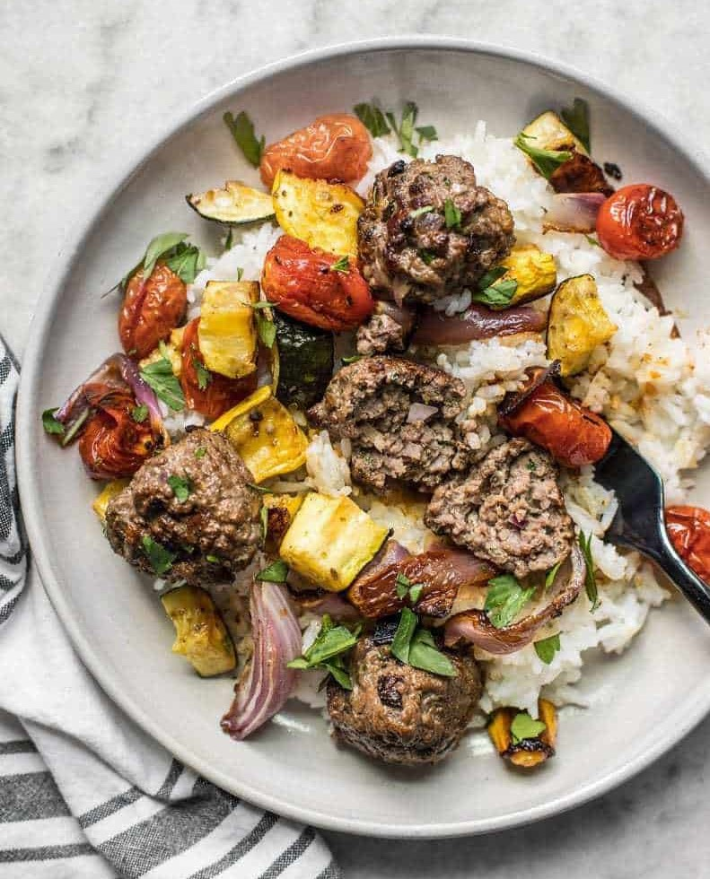

Beef Kofta with Roasted Vegetables

Description
Browned beef full of warm spices, a medley of roasted vegetables with caramelized edges,
and a bed of warm rice makes a fabulously well rounded meal that is a perfect candidate for meal prepping.
These Beef Kofta Meatballs with Roasted Vegetables are my new easy-peasy healthy prep for the week!
Ingredients (for 4 Servings)
- 1 zucchini
- 1 yellow squash
- 1 pint grape tomatoes
- 3/4 red onion
- 2 Tbsp olive oil
- 1/4 tsp garlic powder
- 1/2 tsp dried oregano
- salt & pepper
- 1 lb. ground beef
- 2 cloves garlic, minced
- 1/4 red onion, minced
- 2 Tbsp parsley, chopped
- 1/2 tsp dried oregano
- 1/4 tsp cumin
- 1/8 tsp cinnamon
- 1/8 tsp cloves
- 3/4 tsp salt
- 2 Tbsp cooking oil
- 4 cups cooked rice
- 2 Tbsp parsley, chopped
Steps
-
Preheat the oven to 425ºF. Dice the zucchini and yellow squash.
Reserve 1/4 of the red onion for the meatballs and cut the remaining 3/4 into 1-inch slices.
Place the chopped zucchini, squash, onion, and grape tomatoes on a large baking sheet.
-
Drizzle the olive oil over the vegetables, then add the garlic powder, oregano, salt and pepper.
Use your hands to toss the vegetables in the oil and spices until they are evenly coated.
Spread the vegetables out evenly over the baking sheet, then transfer them to the oven.
-
Roast the vegetables in the oven for 40 minutes, or until they are wilted and browned on the edges,
stirring once half way through.
-
While the vegetables are roasting, prepare the meatballs. Mince the remaining 1/4 red onion.
Add the ground beef, red onion, minced garlic, chopped parsley, oregano, cumin, cloves, cinnamon,
and salt to a bowl. Mix the ingredients together until they are well combined.
-
Shape the meat mixture into 16 ping pong sized meatballs.
This is a good time to begin cooking your rice so that it's finished at the same time as the meatballs and vegetables.
-
Heat a large non-stick or cast iron skillet over medium heat.
Once hot, 1 Tbsp cooking oil and swirl to coat the surface of the skillet.
Add half of the meatballs and cook on each side until well browned (about 7 minutes total).
Be careful as you turn the meatballs, as they can be quite delicate.
If it's easier, you can flatten them into mini patty shapes.
Transfer the cooked meatballs to a clean plate, add more oil to the skillet,
and cook the second batch in the same manner.
-
Once the meatballs are cooked and the vegetables have finished roasting, it's time to assemble the meal.
Place about 1 cup cooked rice on each plate or container, add 1/4 of the roasted vegetables,
then top with four of the beef kofta meatballs. Top with a little more chopped parsley and enjoy!